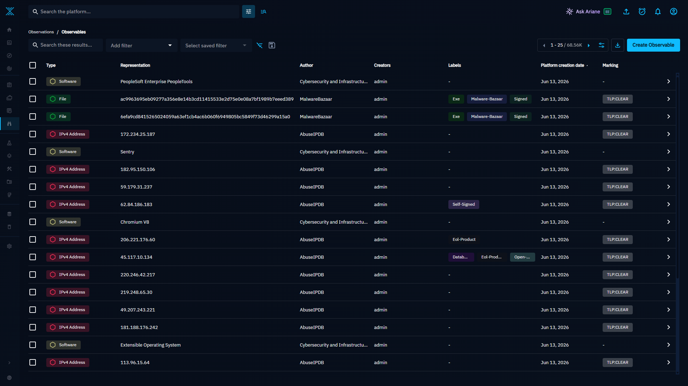

How It Works¶
This page traces a single event from the endpoint all the way to an enriched OpenCTI alert, and explains the decision logic inside the script.
End‑to‑end flow¶
- Event is generated on an endpoint (a Sysmon detection, a Syscheck change, a DNS query, an audited command…).
- The agent forwards it to the Wazuh Manager.
- A rule tags the event with one or more
rule.groups. - The Manager invokes the integration if any of the event's groups match the
<group>list in the<integration>block ofossec.conf. Wazuh writes the alert to a temporary JSON file and calls the wrapper:custom-opencti <alert_file> <api_key> <hook_url>. - The wrapper launches the Python script with the Manager's bundled Python.
- The script decides what to look up based on the event's groups (see below).
- It queries OpenCTI over GraphQL for matching observables and indicators.
- It builds new events for each match, with an
event_typedescribing the match, and writes them back into the Wazuh socket (queue/sockets/queue). - Wazuh re‑ingests those events; the
threat_intelrules turn them into alerts with the appropriate severity.
What the script looks up, by source¶
The script reads alert['rule']['groups'] and chooses a strategy. The IoC it
extracts and the OpenCTI filter key depend on the matched group:
| Matched group(s) | IoC extracted | Filter key |
|---|---|---|
Sysmon EID 1, 6, 7, 15, 23, 24, 25 / process-anomalies |
SHA‑256 from win.eventdata.hashes |
hashes.SHA-256 |
| Sysmon EID 1 (additionally) | Public IPs + URLs from win.eventdata.commandLine |
value (via filterGroups) |
| Sysmon EID 3 | win.eventdata.destinationIp (public only) |
value |
| Sysmon EID 22 | win.eventdata.queryName + resolved A/AAAA IPs |
value |
ids (Suricata/packetbeat) |
DNS question name + answers, or public src/dst IP | value |
syscheck_file (added/modified) |
syscheck.sha256_after |
hashes.SHA-256 |
osquery, osquery_file |
osquery.columns.sha256 |
hashes.SHA-256 |
audit_command |
values in execve starting with http |
value |
If none of these apply — or the extracted value is empty, private, or invalid — the script simply exits without creating an alert.
Public IPs only
For IP‑based lookups the script validates the address with Python's
ipaddress module and discards anything that is not globally routable
(RFC 1918 private ranges, loopback, link‑local, multicast). There is no point
asking a CTI database about 192.168.1.10.
The OpenCTI query¶

For every triggering event the script sends one GraphQL request that asks two questions at once:
- Indicators — does any STIX indicator's pattern match the IoC? The
indicator must have
pattern_type: stix. A maximum of 10 indicators are returned and up tomax_ind_alerts(default 3) alerts are produced. - Observables — does any
stixCyberObservablematch byvalueorhashes.SHA-256? Up tomax_obs_alerts(default 3) alerts are produced.
When the event yields multiple keys at once — for example a Sysmon EID 1 with
both a SHA‑256 hash and a URL in its command line — the script uses GraphQL
filterGroups to query both keys (hashes.SHA-256 OR value) in a single
request.
Choosing the most relevant indicator¶
If several indicators match, the script sorts them so the most actionable one wins, in this order:
- Not revoked before revoked.
- Has detection (
x_opencti_detection) before not. - Higher score (
x_opencti_score) first. - Higher confidence first.
- Still valid (
valid_untilin the future) before expired.
Determining the event type¶
The resulting event_type is what drives the alert severity:
indicator_pattern_match— the IoC matches an indicator's STIX pattern exactly.indicator_partial_pattern_match— the IoC appears in a more complex pattern but is not the whole pattern.observable_with_indicator— the IoC is a known observable that has its own indicator.observable_with_related_indicator— the observable has no indicator of its own, but a related observable does (e.g. the domain resolves to a flagged IP).observable_only— new in this fork: the IoC exists in OpenCTI as a known observable but has no indicator and no related indicator (common with raw feeds like AbuseIPDB). Upstream would stay silent here; this fork raises a medium‑severity alert so you still learn the IoC is known.error— the API could not be reached or returned an error.
See the Event types reference for the severities and the rules that map to each.
Context added to every alert¶
Each generated alert carries a source block so an analyst can pivot back to the
event that triggered it: the originating alert_id, rule_id, the file path and
hashes (for FIM), network 5‑tuple fields (for network events), the Sysmon image
and query name, and the audited execve command line where applicable.
Observable and indicator dashboard links are included so you can jump
straight into OpenCTI.